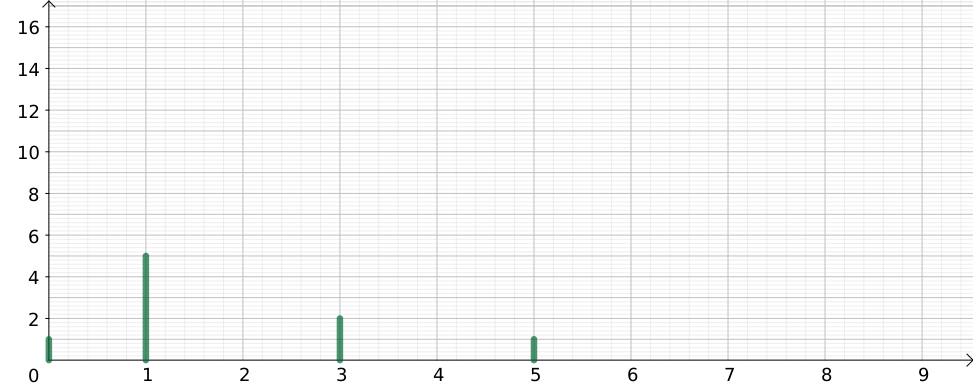

BTS - Maths+STI - TD Spectre
Harmoniques et valeurs efficaces
Un
développement en série de Fourier d'un signal périodique s'écrit :
\( \displaystyle\begin{array}{ccl}
f(t) &=& a_0 + a_1\cos(\omega t) + b_1\sin(\omega t) + \cdots + a_n\cos(n\omega t) + b_n\sin(n\omega t) + \cdots \\
&=& a_0+\displaystyle\sum_{n=1}^{+\infty}\left(a_n\cos(n\omega t) + b_n\sin(n\omega t)\right) \\
\end{array} \)
- \(a_0\) représente la composante continue du signal ;
- les autres coefficients \(a_n\) et \(b_n\) sont rattachés à \(\cos\) et \(\sin\) ; ils indiquent la valeur max de l'harmonique de rang n ;
- ils peuvent être en nombre infini (mais ils tendent à devenir de plus en plus petits lorsque n grandit, globalement)
- L'harmonique de rang n : \(h_n(t)=a_n\cos(n\omega t) + b_n\sin(n\omega t)\);
- a pour valeur max \(A_n = \sqrt{a_n^2+b_n^2}\) ;
- comme c'est une sinusoïde, elle a pour valeur efficace \(H_n=\dfrac{A_n}{\sqrt{2}}=\sqrt{\dfrac{a_n^2+b_n^2}{2}}\) ;
On trace le spectre sous la forme d'un diagramme bâtons qui indique la valeur efficace \(A_n\) en fonction de n.

Le diagramme donne le spectre de \(f(t) = 1 + 4\cos(t) + 3\sin(t) + 2\sin(3t) - \cos(5t)\) ; on voit sur l'expression que \(\omega=1\) rad/s.
Pour chaque signal donné, près avoir indiqué \(\omega\) tracer les spectres dans les diagrammes suivants (compléter l'axe vertical).
- \(g(t) = 1 + 4\cos(t) + 3\sin(t) + 2\sin(3t) - \cos(5t)\) ; \( \omega = \ldots\) rad/s
- \(u(t) = 10 + 40\cos(2t) + 35\sin(4t) + 20\sin(18t) - 5\cos(18t)\) ; \( \omega = \ldots \neq 1\) rad/s
- \(v(t) = 5 + 240\sqrt{2}\cos(100\pi t) + 90\sin(500\pi t) + 20\sin(200\pi t) - \cos(800\pi t)\) ; \( \omega = \ldots\) rad/s
Deux signaux différents peuvent-ils avoir le même spectre ?
Si oui, quelles sont les informations manquantes dans un spectre ?
Valeurs efficaces
Deux signaux \(f\) et \(g\) sont dits orthogonaux lorsque la valeur efficace \((f+g)_{\rm{eff}}\) de \(f+g\) sont liées par l'expression quadratique de Pythagore :
\((f+g)_{\rm{eff}}^2=f_{\rm{eff}}^2+g_{\rm{eff}}^2\)
Deux harmoniques de rangs différents, ainsi que la composante continue d'un signal sont chacunes orthogonales entre elles.
On en déduit : \(f_{\rm{eff}}^2 = a_0^2 + \displaystyle\sum_{n=1}^{+\infty} H_n^2 = a_0^2 + \dfrac{1}{2}\displaystyle\sum_{n=1}^{+\infty} A_n^2 \)
Calculer les valeurs efficaces des signaux étudiés dans la partie précédente.
Enquête
On a relevé le spectre suivant pour un signal pair :
\(a_0=216\) ; \(a_2=144\) ; \(a_4=-29\) ; \(a_6=12\) ;
Quel montage permet d'obtenir un signal de ce type ?
Indice :
tracer la série.